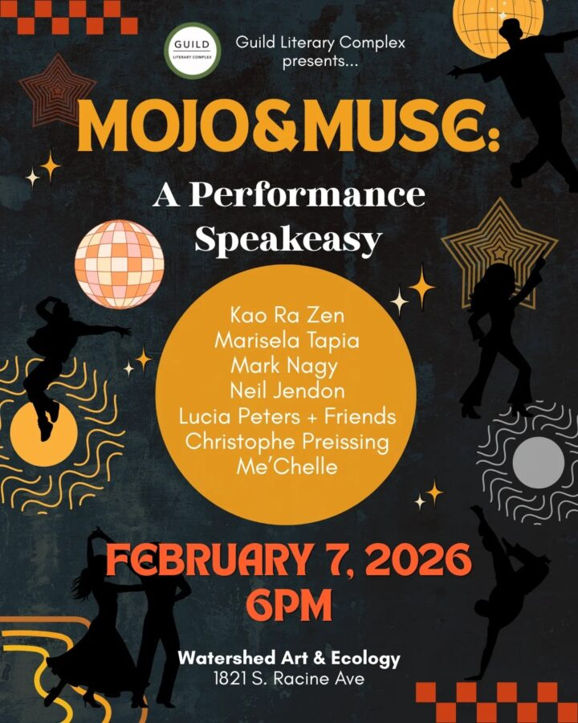

MOJO&MUSE: A Performance Speakeasy
Get ready to experience a night of magic and creativity at MOJO&MUSE – where art comes to life! A special speakeasy of art and community.
Join us for an exciting night of community and art in the beautiful space of Watershed Art & Ecology. The MOJO&MUSE speakeasy will present an evening of special performances of dance, video, poetry, music, and more! Live entertainment and light refreshments will be provided.
Marisela-Raymi Dalila Tapia (left) is a Peruvian-American dance theater artist with a rich background in exploring the intersections of art, language, culture, and identity. With 15 years of experience in studying, performing, and teaching dance, Marisela has left her artistic mark in cities like Chicago, New York, New México, Perú, Spain, and Italy.
Her artistic journey began at Columbia College Chicago, where she earned a Bachelor of Arts in Visual Arts in 2014. Marisela later obtained a master’s degree in Linguistics Applied to Spanish as a Foreign Language from the University of Nebrija in Madrid, Spain. With over four years of teaching experience in both English and Spanish, Marisela has served as a North American Language Cultural ambassador and has taught language classes online.
In the realm of dance, Marisela has received training from master flamenco artists in Spain and has showcased her talents in various international performances. Notable achievements include winning first place at the Flamenco certamen through the Carlota Santana dance company at Lincoln Center in 2015 and headlining and directing performances in top Chicago venues. Her collaborations with renowned organizations, such as Clinard Dance Theater in Chicago, have led to performances at prestigious venues like the Logan Center for the Performing Arts at the University of Chicago.
Marisela’s dance repertoire extends beyond flamenco, encompassing ballet, modern dance, salsa, and traditional Latin and Peruvian folkloric dances. She maintains a strong connection with her cultural heritage, evident in her participation in traditional Peruvian folklore performances.
Kao Ra Zen (right) is a Chicago-based rapper, spoken word poet, multimedia performance artist, video director, recording engineer, curator, photographer, and educator. Kao has performed and/or curated at venues such as the Museum of Contemporary Art, Symphony Center, DANK-Haus, Elastic Arts, Constellation, Alhambra Palace, Oliva Gallery, and Steppenwolf Theatre in Chicago; in addition to performances and screenings in New York; Berlin, Germany; and turku, Finland. Kao earned his Associate in Fine Arts degree from Harold Washington College and then earned his BFA from The School of the Art Institute of Chicago.
Much of Kao’s written, musical, and performance work addresses historical and contemporary societal concerns, existential matters, and promotes self expression, fostering community, and challenging oppressive systems and intolerant perspectives.